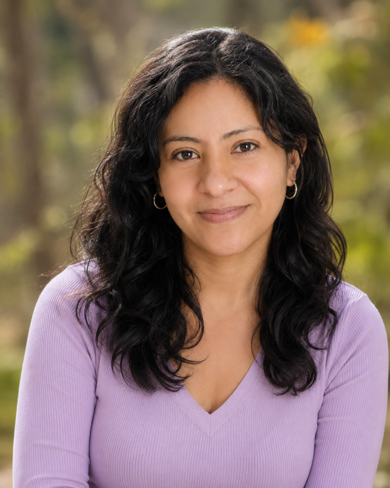

Celia Mena

From friendship to heartbreak, and everything I learned in between.
Celia was part of one of the most important and difficult chapters of my early years in the United States.
When I arrived in the United States, I enrolled in a high school in Anderson, South Carolina. I first attended Westside High School and later T. L. Hanna High School. Although Celia and I did not attend the same school, we met through ESL classes at Extension Campus, a place where students from both high schools attended technical and career-focused courses.
At the time, I was still new to the country and learning English. Celia had already been in the United States for several years, so she was more advanced in the language and more familiar with life here. During my freshman year, we saw each other almost every day. She was already a senior and preparing to graduate, but we became good friends during that period.
After school, life moved on and we lost contact.
Years later, while I was living and working in Orlando, my brother Víctor happened to work at the same place where Celia worked. She recognized him, asked about me, and learned that I was living in Orlando. When Víctor planned a Thanksgiving trip to visit me, Celia came with him.
Seeing her again felt strangely familiar. She looked almost exactly as I remembered her.
That night, after everyone had been drinking and there was nowhere else for her to stay, she stayed in my room. Our old friendship crossed into something more personal, and from there, a relationship began. What had started years earlier as a high school friendship became something more serious than either of us probably expected.
For a while, we managed a long-distance relationship between Florida and South Carolina. I traveled often to Anderson, and she came to Orlando as well. Eventually, once her divorce was finalized, I decided to move back to Anderson and live with her. It was a major decision. I left a good job in Orlando, stepped away from friends and the life I had built there, because I believed the relationship had a real future.
Living with Celia was also a new experience for me because she had a daughter. It was the first time I had been in a serious relationship with someone who was already a parent, and it introduced me to a different kind of home life and responsibility.
Over time, the relationship changed. The closeness and excitement we had at the beginning slowly faded, and living together became increasingly difficult. During that time, I came to realize that she had begun seeing a coworker at her new job. From my perspective, that became the final factor that brought our relationship to an end.
By the second year, Celia decided to end the relationship. I eventually moved out, and at the time, it was one of the most painful experiences of my life. She was the first woman who truly broke my heart. She was also the first woman who made me cry, and that experience forced me to see love, commitment, and sacrifice in a completely different way.
Looking back now, I can see the lessons more clearly, and much of it is even a little funny in hindsight. I learned not to abandon my stability, career, friendships, or direction in life for a relationship unless the commitment is equally strong on both sides, and that timing matters when someone is still healing from a divorce. It also made me realize that I would not pursue another serious relationship with someone significantly older than me. Even with the heartbreak, Celia remains part of a chapter that helped me grow up and become more careful about the choices I make for love.